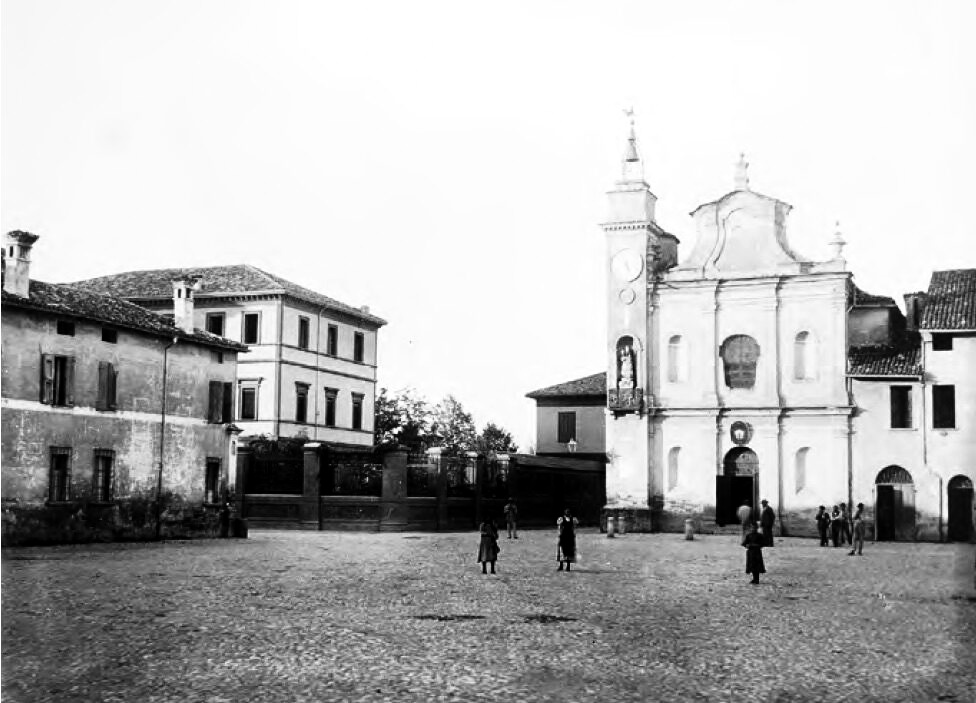
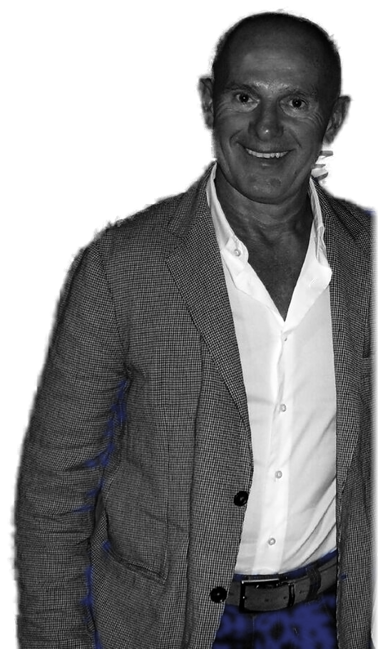
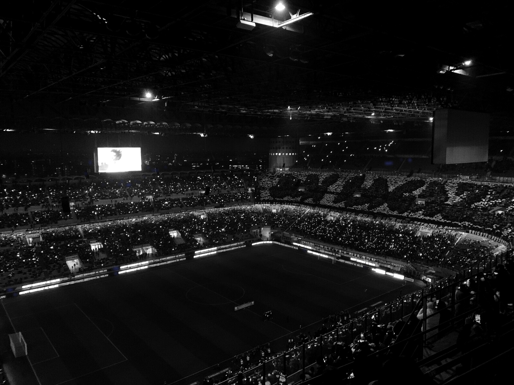
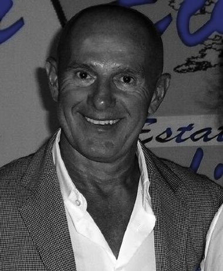
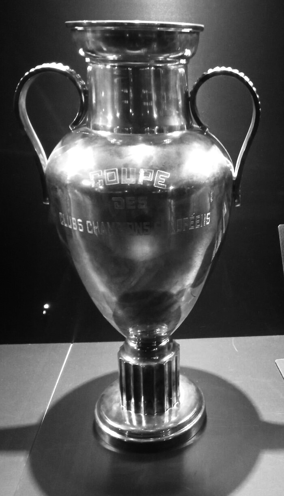

FUSIGNANO, SU PUEBLO · POSTAL ANTIGUA · DOMINIO PÚBLICO

ARRIGO SACCHI
FOTO: ELENA TORRE, CC BY-SA 2.0
FICHA DE JUGADORRECREACIÓN
NOMBREARRIGO SACCHI
PROFESIONAL
AMATEUR
COPPA ITALIA 1986-87
PARMA 1 – 0 MILAN
FASE DE GRUPOS
PARMA 1 – 0 MILAN
ELIMINATORIA · GLOBAL
×2

SAN SIRO, MILÁN, 2021 · FOTO: VINCENZO.TOGNI, CC BY-SA 4.0
FICHA DE JUGADOR
PROFESIONAL
?

ARRIGO SACCHI, 2007 · FOTO: ELENA TORRE, CC BY-SA 2.0CABALLO
CON EL MILAN, COPA DE EUROPA
1989 · 1990

COPA DE EUROPA · MUSEO DE SAN SIRO · FOTO: VASIL EVLOGIEV, CC BY-SA 4.0FOTOS: ELENA TORRE (CC BY-SA 2.0) · VINCENZO.TOGNI · VASIL EVLOGIEV (CC BY-SA 4.0) ·
POSTAL DE FUSIGNANO (DOMINIO PÚBLICO) · ZAPATOS, FICHAS, CUADRO Y PORTADAS: RECREACIÓN